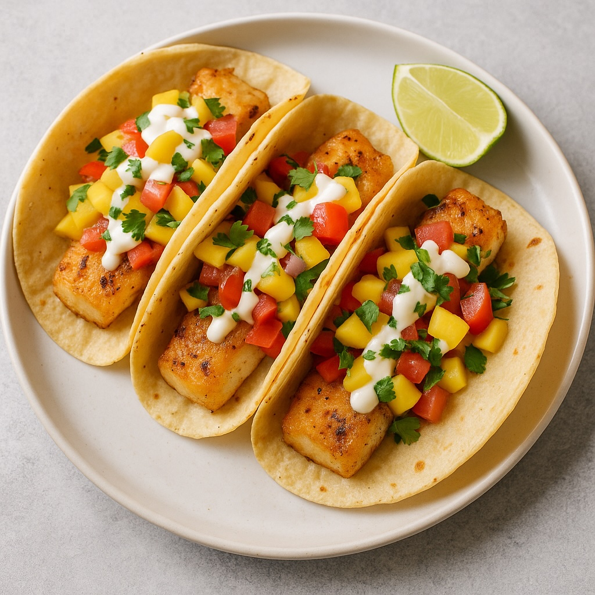

Home
Fishtaco

Description
This fish taco features a perfectly seasoned, pan-seared fillet nestled in a warm corn tortilla.
It’s topped with crisp shredded cabbage, zesty pico de gallo, and drizzled with a creamy chipotle-lime sauce.
Served with a fresh wedge of lime, it’s a vibrant, refreshing dish that balances bold flavor with coastal simplicity.
- 400g white fish (like cod or tilapia)
- 1 tbsp olive oil
- Chili powder, cumin, salt, pepper
- 6 small tortillas
- Shredded cabbage
- Pico de gallo (or chopped tomato + onion + cilantro)
- Lime wedges
- Sour cream + mayo + lime juice (for sauce)
Steps
- Season fish with spices, salt, and lime juice
- Cook fish in a pan with olive oil until flaky
- Mix sour cream, mayo, and lime juice for sauce
- Warm tortillas in a pan or microwave
- Assemble tacos: tortilla → fish → cabbage → pico de gallo → sauce
- Serve with lime wedges